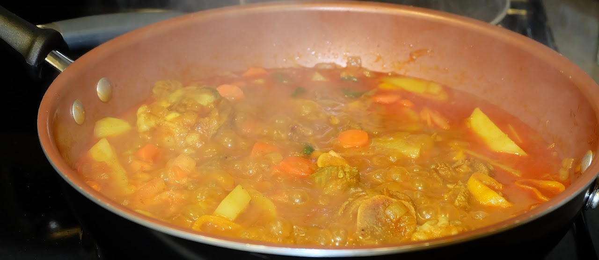

Live → Blog
March 5, 2021

Those who are blessed with the privilege to see my status updates on WhatsApp, or those who sometimes get the carbon copy on my Messenger stories, often ask me to share the recipes of the great meals I make. But how can I share the recipe of the meals when each meal is its own story? Although the pictures might not show it, each of my meals is a unique creation. This is because my cooking is inspired by the ancestors and so the choice of spices, the quantities of various ingredients, and even the cooking time just depends on what they inspire me to do on any given day. This always results in great variance in the taste of the food. The one whose heart I try to reach via the stomach is understandably not a fan of this, but the scientist in me is always excited by the uncertainty in how the food will turn out. Despite this variance, there are some constant factors that make my meals great.
Every meal I cook is an expression of love. When I cook for my woman, the aim is to convince her to give me her number again. When I cook for my housemate, the aim is to share a piece of my life with him. When I cook for myself, the aim is to show my body how much I appreciate all that it does to carry the expanse of my consciousness. I wrote sometime back that food is joy. That is as true today as it was when I wrote that piece. Just recently I was blessed with the privileged to change the mind of an acquaintance of mine regarding goat meat. There is no greater joy than sharing my goat stew and helping someone rethink their stance on the matter. Indeed, there is no greater joy than sharing love because my cooking is love expressed through action.
But what really makes my food great? Those who know me well know I love routine. Yes, the ancestors are very inconsistent with respect to the spices and the ingredients they inspire me to use. But my meals are very predictable. They always have a source of carbohydrates, a non-plant protein, and plenty of vegetables. As a young lad I was taught that carbohydrates are energy giving foods, so I have them in my diet to ensure I have the energy to live my best life. I was also taught that proteins build up our bodies, and also my ancestors taught me that there is no protein better than meat in as far as taste goes. Lastly, the veggies are because I was taught that my body's soldiers (masole a mmele in Setswana, immune system in English) need vitamins contained in the veggies to keep my body healthy. Because I am not one to count calories and the like, I am convinced if each of my meals contain a carbohydrate, some protein, and vegetables, then my body will get all the nutrition it needs.
Who exactly are these ancestors I speak of? My genius is not that I am an original, but that I am not afraid to copy things that I resonate with from anyone and everyone. As such, the choice of what spices and veggies to use, and in what quantities, is in fact the collective wisdom of all the people whose cooking preferences I have witnessed. From my family's resource constrained cooking to the culturally inspired styles of the various housemates I have had over the years. Even the way my departed grandmother used to love her meat, or my mother's salt preferences due to her hypertension, affect the choices I make in my cooking. Given all these influences in my cooking, I cannot really claim to make Tswana cuisine because my food is too western for Tswana cuisine, but too Tswana for American cuisine.
In short, the great meal to me is one that expresses love, is nutritionally balanced without trying to be, and is a collection of all the culinary experiences one has had over their life. I make great meals all the time, even if they sometimes come out saltier than I would like or less crunchy than optimal. Thank you for allowing me to share with you a piece of my heart.
← Return to Blog